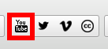
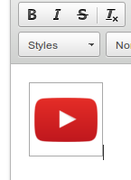
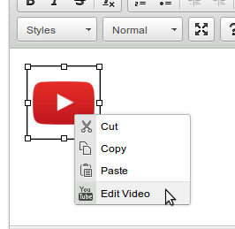

This widget allows you to search YouTube from within CKEditor and quickly embed a video at the current cursor position.
-
Click on the YouTube icon.

-
A search field will appear. Type in the search terms you would search into YouTube, or the video ID if you know it, then either hit ENTER or click the search button on the right.
-
The top 5 search results will appear below. The results are sorted by relevance and show the video icon, title and description. Click on the result to embed the video at the current cursor position.

-
Right click on the video and select the Edit Video option to change the embedded video, and search just as above.

You will initially see the video ID in the search bar. This is intentional, as it ensures that you see the previously embedded video's details.